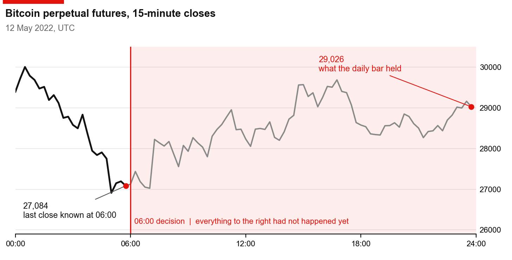
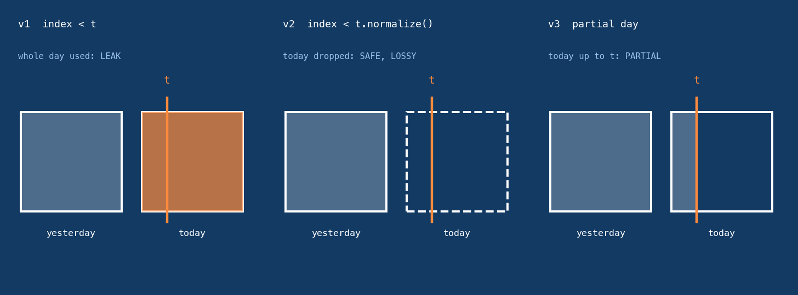
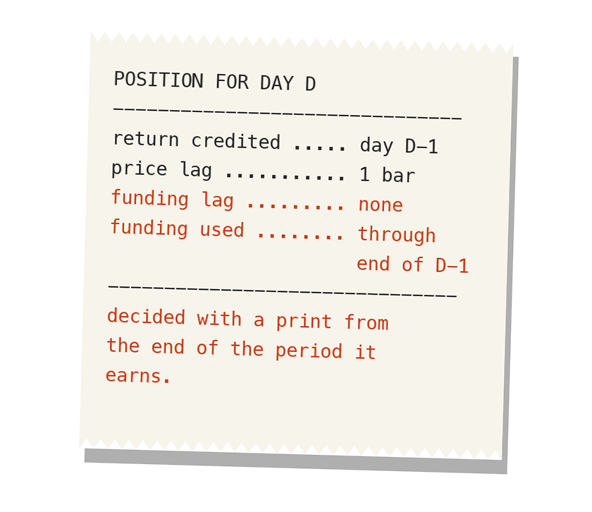

At 06:00 it knew the price from 23:45. We traced why.
This is the first post in Rookie Mistakes, a short series on mistakes we made early in our alpha research. The first one is looking at the future: a backtest that used information it couldn't have had at the time.
None of these mistakes were exotic. They got through our own tests, in real work, and one of them got through a hyperparameter search and a forward test. Each post follows one mistake from the way it hid to the fix.
![At 06:00 UTC on 12 May 2022, with Terra collapsing, a risk filter in one of our backtests read a Bitcoin close of 29,026. The last close the market had printed by 06:00 was 27,084. The 29,026 didn't exist until midnight. For that filter, the backtester was an oracle. In live trading the same filter only ever sees data that ends at the decision time, so the backtest was scoring a strategy nobody could run. I've hit this class of bug three times in six months, in three different forms. Each time, the check I trusted had passed.](007-oracle-backtester/v2-wrap.png)
I call this the oracle backtester problem: a backtest that knows things the live system never will.
The first time: a line that was right somewhere else
In March I ported a daily-frequency signal from our live code into the research framework. The port kept the original's read of the daily series, asof(t). The backtest looked spectacular. When the leak was fixed, the result fell to roughly zero.
The line was correct in the system it came from, where a daily signal runs at the day boundary and asof(t) returns the last complete bar. In the port, decisions happen at other times of day. By default pandas labels a daily bin with its start, so today's bin is stamped midnight and holds the whole day. Series.asof returns the last row at or before t, so at a morning decision it returned today's bar, evening included. The same line leaks at every hour except the one it was written for.
The first fix, asof(t - 1 day), stopped the leak and threw away up to a day of data that was legitimately known. The better one was to rebuild the signal so it never touches raw data: every input is read through a window that ends one bar before the decision. Something else surfaced once the leak was gone. A signal designed for completed daily bars was now being fed partial days at an intraday cadence, and it only worked at the daily cadence it was built for. Removing the leak showed me what the signal had been built for.
That month I also wrote the test I still trust most. It replaces everything after t with random noise, recomputes the signal at t, and fails if the output moves.
The second time: a cache built for speed
In June a different strategy leaked through a daily statistic that was precomputed once from the whole dataset. Resampling the full history at every decision tick had been the slowest part of the backtest, so the cache was a reasonable optimisation. Precomputing is fine when each value uses only the inputs available at its own time. This one didn't, so the evening was already inside the series before any per-decision check ran.
The standard guard is to slice with index < t, and the code did. That day's bin is stamped 00:00, so it passed. Our 15-minute bars are stamped at their start as well: the bar stamped 05:45 closes at 06:00, and its 27,084 was the last price anyone had at the decision. The label said past and the value included the evening. The March test lived in another strategy's repo and had never run on this one.

The 06:00 decision, and the 23:45 close the daily bar already held.
The backtest couldn't show it. It ran forward over a complete file and never contradicted itself. What gave it away was the strategy's first days of live trading in June, when I compared the backtest's exposure with the live system's at intraday ticks. Live data ends at t, so live can't peek. Over the same two days the backtest read calm and let exposure recover, while live stayed cautious. The backtest carried more than twice the live system's gross exposure on the same book.
To find which side was wrong, I ran the live code on the same data file. It reproduced the live logs to within a fraction of a percent on every cycle, which put the fault in the backtest. As a control, I flipped only the slice operator on one identical series, and the filter's output went from cautious to fully on.
The over-correction
The obvious fix drops the in-progress day with index < t.normalize(). The live port already did that; the fix had been made there first and never mirrored into the backtest. It is safe, and it also throws away the hours that have already happened. The alternative is a partial-day aggregate built from bars up to t, but a partial day has partial volume, so anything built on volume reads differently from a complete day. I tried it. It performed worse and made the signal depend on a half-finished day, so I took the plain cut that matches live. I also rejected giving the live system the leak so the two would agree.

Three ways to cut the day at decision time t.
Which side was wrong everywhere else
I then swept every strategy repo for the same pattern. Only that one backtest leaked. In four others the divergence ran the other way. The live code had lost the end-of-day guard because the live entry point isn't given the decision time, so it trusts the platform to deliver only complete bars. Nothing in the code enforces that. Changing those backtests would have introduced a leak.
The third time: two correct options
In September I found a daily strategy whose backtest had an engine option switched on that delays the price series by one day, to mimic the delay of a live data fetch. The engine also computed profit and loss from that delayed series. The funding feed stayed on its original clock. For the position labelled day D, that meant:
- Decided with: funding through the end of day D-1, including the settlements that printed during D-1.
- Credited with: the return of day D-1, midnight to midnight, the same day those settlements printed in.
- Should have earned: the return from the start of day D, after the order filled.
Every number was real and already published. The pairing was wrong.

How the funding pairing reaches the position for day D.
The fix was not to shift the funding by a day too. The framework already leaves out the bar that hasn't closed, so the right setting was no delay at all. With only that changed, the in-sample Sharpe fell from 2.51 to 0.31, in a backtest of a strategy we never deployed.
It survived the hyperparameter search and the forward test, because the in-sample and out-of-sample windows carry the same pairing. A comparison between two windows can't see a flaw both of them share.
What we do now
The check that would have caught the first two is truncate-and-compare on the whole signal. Compute the output at t from data up to t, compute it again with arbitrary bars appended after t, and fail on any difference, including anything built before the loop starts. I proposed it as a gate for every alpha, not one repo. Passing it is evidence, not proof. Every cache has to be rebuilt on each run, and the check should compare intermediate values such as the risk filter's output, not only the trades, because a leak can move a value without crossing a trading threshold.
The third case needs a different check, because the signal there never read the future. A backtest has to answer two questions separately: could we have known this at the time, and could that position have earned that return? For the second, we test the order of the timestamps: when each input became available, then the decision, the order and the fill, and only then the start of the return it earns. The rule underneath all three cases is the same. What matters is when a value became available, not the time printed on it. A daily bar stamped midnight isn't available until the day ends.
Windowing now lives in the base class, so the safe read is the default. I also proposed handing signals only the data up to t, so they can't see later bars at all. For anything a backtest can't check against itself, the live system is a cross-check, not the answer. The reference is when each piece of data became available, compared with the order and fill times.